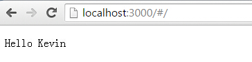

Starting in March, I was assigned a new task related to UI development, using technologies such as AngularJS and Express JS. So I took the opportunity to learn the new technologies on weekends.
The UI architecture of our team's product is as follows:

The front end mainly uses the AngularJS framework, combined withBootstrapthe many controls it provides, as well as JQuery. The backend mainly uses a Web Server built with Express JS. Express JS works very conveniently with Nginx.
As a result, when the project wasn't busy, I had the time and interest to learn AngularJS and Express JS.
At the same time, I implemented a very simple website example using AngularJS + Express JS.
I. AngularJS
AngularJS is a project developed by Google employees and later maintained by Google. You can download the latest version 1.4 and stable version 1.3.15 from https://angularjs.org/. To learn AngularJS, please visitAngularJS Tutorial 。
In simple terms, AngularJS is aJavascript framework that runs on the front end.Its two main features are throughdirectivesextending HTML, and throughexpressionsbinding data to HTML. It also provides controllers, Filter filters, Factory services, etc.
Because AngularJS runs on the front end,it can be combined with any server-side technology,and it is a great fit with Express JS.
AngularJS was created to solve the drawbacks of manipulating the DOM in static web pages,and is suitable for developing dynamic web applications.。
The principle of AngularJS can be understood through the following diagram:

Here are a few important concepts of AngularJS:
1. Controller
To dynamically manipulate the data in a web page, we can write a controller for the HTML page. A controller is essentially a Javascript method. For example, for each HTML page, we can write a corresponding Javascript method as a controller to control the data on the page. As follows:
index.html
<!doctype html>
<html ng-app="myApp">
<head>
<script src="lib/angular-1.3.15/angular.js.html"></script>
<script src="lib/angular-1.3.15/angular-route.js.html"></script>
<script src="js/controller.js.html"></script>
<script src="js/angularMainApp.js.html"></script>
</head>
<body ng-view>
<div>
<p>Hello {{name}}</p>
</div>
</body>
</html>
This is a page written with an AngularJS controller. Specify the AngularJS app as myApp. Notice the expression {{name}}; name is a dynamic variable. Where does the value of name come from? It is assigned to name in the corresponding controller, so that when users visit the index.html page, they can see the real value of name.
controller.js
// Declare angular JS level module wich depends on filters, and services
var myControllers = angular.module('myControllers', []);
// controller
myControllers.controller('indexContrl', ['$scope', function ($scope) {
$scope.name = "Kevin";
}]);
In controller.js, we define a controller named indexContrl, which assigns a value to name in index.html. Of course, in real development, the controller code will definitely be large. I suggest placing each controller like indexContrl in a separate JS file, which is more standardized and easier to maintain.
There is a problem:How is indexContrl associated with index.html? How does AngularJS know we want to use indexContrl to control index.html?
There are two ways. One is to specify it directly in index.html:
<div ng-controller="indexContrl">
<p>Hello {{name}}</p>
</div>
But this approach is too troublesome for large websites. It is recommended to use another way, which is to use another Module of AngularJSng-routeto do route control. For different paths, define the respective controllers in the same file. As follows:
myAngularApp.js
// Declare angular JS level module wich depends on filters, and services
var myApp = angular.module('myApp', [ 'ngRoute', 'myControllers']);
// route
myApp.config(['$routeProvider',
function($routeProvider) {
$routeProvider.
when(
'/',
{
templateUrl: 'index.html',
controller: 'indexContrl'
}
).
otherwise( {
redirectTo: '/404'
});
}
]);
It is worth noting that you must reference ng-route in the myApp module, and also include the angular-route.js file in your page, otherwise it will not work.
In this way, the data in the index.html page will be controlled by the indexContrl function. This is just a simple demo; for more features, you need to read the documentation.
2. Filter
AngularJS provides filter functionality. In essence, we define some common methods to format the data output on the page. It is very convenient.
It is recommended to put them in a separate Filter.js file during development.
3. Factory Service
It also lets us define some common methods as services. However, all services are lazily instantiated; they are instantiated only when used or depended upon, and they are all singletons.
It is recommended to put them in a separate Factory.js file during development.
II. Express JS
In the front end of the example, we used the AngularJS framework to develop HTML pages and corresponding JS files. But the backend of the website requires other technologies. If we want to use Node.js as the backend, it is very simple; http.createServer is enough. However, in real website development, Express JS is more suitable.
Express JS is currently the most popular web development framework based on Node.js, providing various modules such as session and cookie, and can quickly build a fully functional website.
In essence, Express JS isdeveloped based on the built-in http module of Node.js.
Express JS is very convenient to use with the Nginx reverse proxy server.
Here, an important concept of Express JS ismiddleware, you can load and use many modules provided by Express JS or other modules as middleware. Its role is to handle HTTP requests. After one middleware finishes processing, it can pass to the next middleware.
You can use NPM to download Express JS.
npm install express
If you want to quickly use Express JS to build a website backend, I recommend a tool called express-generator. It can help you quickly create an Express JS project and generate the necessary files.
npm install -g express-generator
But here, I found that express-generator uses quite a few other modules, such as Jade for view rendering, which is a bit complicated. Still, I used it as a reference and built a simplest Express JS project myself.
The path is as follows:

The public folder contains UI-related files, as follows:

Among them, app.js is the entry file of Express JS, equivalent to the main function.
app.js
var express = require('express');
var http = require('http');
var path = require('path');
var routes = require('./routes/index');
var app = express();
app.use(express.static(path.join(__dirname, 'public')));
app.use('/', routes);
http.createServer(app).listen(3000);
Here, we use Express JS to create a server. Note that line 8 specifies the folder for pages, and line 10 defines the route information for the path / in the index file in the routes folder.The order of these two lines cannot be wrong.。
routes/index
var express = require('express');
var router = express.Router();
/* GET home page. */
router.get('/', function(req, res, next) {
res.render('index', { title: 'Express' });
});
module.exports = router;
It means that for requests to the path /, it looks for the index.html file in the public folder.
In this way, with a single command,
node app.js
you can launch the website.
III. Example Results and Summary
Finally, visit the website and you can see the correct result. The website is up, and the variables on the page have been replaced with the correct data by the AngularJS controller.

Let me mention a small point. During the initial test, the variables on the page would not be replaced no matter what. I spent hours, changed the AngularJS library, changed the controller code, all to no avail. Finally, after checking references and documentation, I found that only when the page hasng-view, will it work. So that's how it is... What a pain...
This article only introduces a very simple example of building a website with AngularJS + Express JS. I hope it is useful to you.
Original article: http://www.cnblogs.com/KevinSong/p/4495729.html